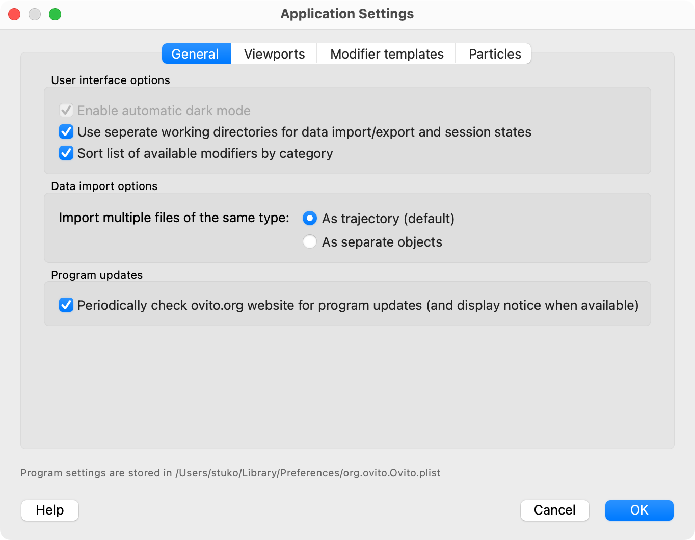

General settings
{kind=link}
On this tab of the application settings dialog, you can adjust global options affecting the program’s user interface and graphics system.
User interface options
- Enable automatic dark mode
Lets OVITO use a UI color scheme that matches the current light/dark mode settings of the operating system. This option is permanently active on Linux and macOS platforms. Note that the color of the viewport windows is controlled by a separate option.
- Use seperate working directories for data import/export and session states
If this is turned on, OVITO remembers across program sessions the most recently used folders for different file I/O operations, e.g., data file import & export, session state loading & saving, or image output.
When off, the global working directory is used as initial choice in all file selection dialogs. It typically depends on where OVITO was launched from (on the command line).
- Sort list of available modifiers by category
If turned on, the list of available modifiers displayed by OVITO is sub-divided into functional groups. If turned off, modifiers are offered in the form of a single, alphabetically ordered list.
Data import options
- Import multiple files of the same type pro
This option controls what should happen when you import multiple files of the same file format. By default, OVITO loads the selected files as frames of a trajectory sequence, which can be played back as an animation. Alternatively, you can choose to import each file as a separate data pipeline and show all datasets side by side. The latter option requires OVITO Pro, because only this edition supports adding more than one pipeline to the visualization scene.
Program updates
- Periodically check ovito.org website for program updates
If activated, the program checks for new software updates upon program start by contacting the server www.ovito.org. In case a new program release is available for download, a corresponding notice is displayed in the command panel of the program. No personal information or usage data is transmitted to or logged by the software vendor.